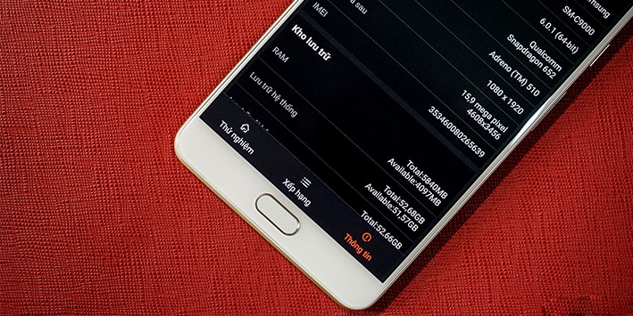

Chân dung iPhone 8 hiện lên như thế nào qua những tin đồn
Thứ Bảy, 15/04/2017 11:36
Hàng loạt tin đồn, rò rỉ và suy đoán từ các nhà phân tích tên tuổi cũng như giới đầu tư đã đã dần dựng lên hình dáng hoàn chỉnh của chiếc iPhone 8, hay còn là model kỷ niệm đánh dấu 10 năm chiếc iPhone đầu tiên ra đời.
Tên gọi
iPhone 7/7 Plus trình làng hồi năm ngoái đã chính thức phá vỡ quy luật làm mới sản phẩm “hai năm một” của Apple và có vẻ như năm nay Táo khuyết cũng sẽ có động thái tương tự. Theo đó, nhiều tin đồn nói rằng hãng công nghệ đến từ Cupertino sẽ bỏ qua model nâng cấp iPhone 7s/7s Plus để lên thẳng model iPhone 8/8 Plus trong năm nay.
Điều này được cho là khá chính xác nhất là trong thời điểm bộ đôi Galaxy S8/S8 Plus mới trình làng của Samsung đang đạt được thành công ngoại mong đợi nhờ sở hữu một thiết kế hoàn toàn đột phá, cấu hình khủng cùng nhiều tính năng mới. Và việc trình làng model có số hiệu thấp kém hơn như iPhone 7s hay iPhone 7s Plus sẽ làm giảm vị thế cạnh tranh của Apple trên thị trường.
Trong khi đó, một số thông tin khác lại đề cập đến thiết bị thứ ba. Cụ thể, Fast Company tuyên bố rằng sẽ có ba chiếc iPhone được giới thiệu trong năm nay là iPhone 7s, iPhone 7s Plus và iPhone 8. Thậm chí, cái tên iPhone 8 có thể thay thế bằng iPhone X (X ở đây tượng trưng cho số 10 trong hệ số La Mã). Nhìn chung, ngoại trừ Apple thì không ai biết được tên gọi chính thức và số lượng iPhone sẽ xuất hiện trong năm nay.
Ngày phát hành
iPhone 7/7 Plus ra mắt vào ngày 7/9/2016 và iPhone 6s/6s Plus ra mắt ngày 9/9/2015. Cả hai sự kiện này đều diễn ra vào thứ tư, cùng là thời điểm hai ngày sau Ngày Lao động ở Mỹ (diễn ra vào thứ Hai đầu tiên của tháng 9) và cũng đều là ngày cuối cùng của Triển lãm điện tử tiêu dùng IFA – một sự kiện mà Apple thường không bao giờ tham dự.
Nếu tính theo cách này, Apple sẽ trình làng mẫu iPhone kế tiếp vào ngày 6/9/2017 bởi Ngày Lao động năm nay rơi vào 4/9 còn IFA 2017 sẽ kéo dài từ 1-6/9. Sự kiện ra mắt sản phẩm mới của Apple, như thường lệ sẽ làm lu mờ các đối thủ cạnh tranh đến tham dự triển lãm ở Berlin.
Say ngày ra mắt, iPhone mới có thể cho đặt hàng từ 8/9 và sẵn sàng lên kệ một tuần sau đó (tức ngày 15/9. Trong khi đó, mẫu iPhone thứ ba được dự đoán là có mức giá lên tới 1.000 USD có thể bị trì hoãn tới tháng 10 hoặc 11 do các vấn đề kỹ thuật liên quan đến màn hình OLED.
Thiết kế
Thông tin về việc Apple ký hợp đồng đặt hàng 95 triệu màn hình OLED của Samsung để phục vụ cho model iPhone mới được tiết lộ gần đây đã ngầm khẳng định thông tin về việc trang bị màn hình OLED thay cho màn hình LCD truyền thống trên mẫu iPhone thế hệ mới. Theo đó, iPhone 8/8 Plus đều sẽ sử dụng màn hình OLED nhưng không phải các tấm nền cong sang hai viền mà chỉ có lớp kính phía trên được làm cong 2.5D. Điều này phù hợp với xu hướng mới của điện thoại thông minh là màn hình tỉ lệ dài và tràn viền. Hạn chế nhược điểm của màn hình cong như dễ chạm tay vào màn hình hay cảm giác cầm nắm không chắc chắn, trong khi tiết kiệm được thời gian để không phải thiết kế lại hệ điều hành iOS.
Bên cạnh đó, một số tin đồn cho thấy sự chuyển đổi vỏ máy từ vật liệu nhôm sang thép không gì, hoặc thậm chí là vỏ gốm cao cấp cho phiên bản kỷ niệm 10 năm. Nhiều ý kiến cho rằng việc ra mắt iPhone Jet Black vào năm ngoái là bước thử nghiệm của Apple để đánh giá nhu cầu người dùng về một thiết bị có ngoại hình bóng bẩy.
Một số concept nổi bật về iPhone mới:

Màn hình
Nhiều người mong muốn iPhone 8/8 Plus sẽ có màn hình 4,7 inch và 5.5 inch, bởi nếu nhỏ hơn sẽ đụng chạm iPhone SE và lớn hơn sẽ lấn sân sang iPad Mini. Tuy nhiên, một số thông tin rò rỉ nói rằng mẫu iPhone thứ ba nhiều khả năng sẽ có màn hình 5,8 inch.
Nhà phân tích Ming-Chi Kuo của KGI Securities từng đưa ra nhận định rằng model iPhone thứ ba sẽ có màn hình OLED được thiết kế lại, trong khi hai model khác vẫn dùng màn hình LCD. Điều này cũng đã được khẳng định qua một báo cáo từ BGR, nói rằng chỉ một trong ba thiết bị ra mắt năm nay có màn hình OLED.
Tuy nhiên, tờ Korean Herald từ Hàn Quốc lại nói rằng ba mẫu iPhone 2017 đều có màn hình OLED cong như các sản phẩm của Samsung và thời báo uy tín Wall Street Journal cũng tuyên bố Giám đốc thiết kế Jony Ive của Apple cũng đang xem xét một màn hình OLED cong, hoặc OLED không viền cho phiên bản iPhone 2017.
Một điều chắc chắn là tính năng 3D Touch sẽ được tích hợp trong thiết bị theo hình thức nào đó, có thể nâng cao hơn để tương thích với Apple Pecil, ít nhất là phiên bản Plus. The Investor nói rằng Samsung đang phát triển một màn hình OLED cảm ứng áp suất cho iPhone 8, trong khi trang khác nói rằng màn hình True Tone trên iPad Pro 9,7 inch của Apple sẽ xuất hiện trên iPhone 8.
Về độ phân giải, cố thông tin cho rằng iPhone 8/8 Plus sẽ có màn hình AMOLED độ phân giải 2K. Độ phân giải Quad HD trên màn hình 5,5 inch sẽ đẩy mật độ điểm ảnh lên 534ppi, lớn hơn nhiều so với mức 401ppi của iPhone 7 Plus. Trong khi đó, model nhỏ hơn sẽ có mật độ điểm ảnh là 635 ppi, so với mức 326 ppi của iPhone 7. Chuyển sang AMOLED cũng sẽ giúp tỷ lệ tương phản trên màn hình máy được tốt hơn.
Camera
Với xu hướng phát triển như hiện nay, nhiều nhà phân tích cho rằng Apple sẽ cung cấp hệ thống camera kép cho hai hoặc cả ba tùy chọn. Cùng với đó, nhiều khả năng Táo khuyết cũng sẽ bổ sung thêm các tính năng mới như cảm biến mống mắt hay nhận dạng khuôn mặt trên thiết bị của mình.
Ở phiên bản trước, máy ảnh của cả iPhone 7 và 7 Plus đều là cảm biến 12 MP. Tuy nhiên, trên 7 Plus là camera kép với hai tiêu cự tương đương 56mm khẩu độ f/2.8 và 28mm khẩu độ f/1.8, vừa hỗ trợ chụp góc rộng vừa tăng khả năng chụp chân dung, cùng một số lựa chọn khác.
Cả hai đều có tính năng chống rung quang học và cụm 4 đèn flash LED True Tone. Còn camera trước trên cả hai thiết bị đều là 7 megapixel với khẩu độ f/2.2.
Phần cứng
Tương tự các model iPhone mới trình làng từ trước tới nay, model iPhone 2017 sẽ được trang bị chipset thế hệ mới dự kiến có tên là A11 Fusion với chip cảm biến chuyển động M11. Dung lượng máy được kỳ vọng là sẽ giống như người tiền nhiệm với 32GB, 128GB, 256GB, đi kèm đó là các tùy chọn màu.
Tuy nhiên, nếu đi kèm với tính năng SmartConnectoer, dung lượng pin nhiều khả năng sẽ lớn hơn mức thông thường một chút. Tờ The Wall Street Journal nói rằng, thế hệ iPhone tiếp theo sẽ có cổng USB Type-C thay vì sử dụng Lightning như hiện tại. Ngoài ra thì iPhone 2017 cũng được đồn đoán là sở hữu công nghệ sạc không dây cho phép nạp năng lượng từ khoảng cách 15 feet (khoảng 4,5m). Đây là công nghệ được phát triển bởi Energous và đã có những dấu hiệu cho thấy họ đang làm việc với Apple dù Táo khuyết chưa đưa ra xác nhận chính thức nào.
Phần mềm
Mẫu iPhone mới của Apple luôn đi kèm với phần mềm mới nhất và thường phần mềm này sẽ được giới thiệu tại sự kiện WWDC diễn ra vào tháng 6 hằng năm. Và đối với iPhone 8/8 Plus, phần mềm tương ứng sẽ là iOS 11.
Giống như các bản cập nhật hàng năm, iOS 11 sẽ được bổ sung thêm nhiều tính năng mới. Tuy nhiên tính đến thời điểm này, chúng ta vẫn chưa có thông tin chi tiết về những tính năng này.
Bình luận:
Tin tức liên quan
-
 Đây là mẫu iPhone 8 đẹp nhất từ trước tới nay, fan nhà Samsung có lo lắng?
Đây là mẫu iPhone 8 đẹp nhất từ trước tới nay, fan nhà Samsung có lo lắng? -
3 lý do khiến các game thủ phải mua ngay Galaxy C9 Pro
-
 5 smartphone màn hình cong tràn cạnh đáng mong đợi nhất 2017
5 smartphone màn hình cong tràn cạnh đáng mong đợi nhất 2017 -
Cách khắc phục tình trạng iMessage không thể kích hoạt
-
Cách tắt âm thanh chụp ảnh cho iPhone không cần Jailbreak
-
Hướng dẫn cách jailbreak iOS 9.2 đến iOS 9.3.3 bằng hình ảnh
Khuyến mại mới nhất
-
 Trở thành khách hàng VIP của FPT Shop với thiết bị quyền năng F-Plus
Trở thành khách hàng VIP của FPT Shop với thiết bị quyền năng F-Plus -
 Mua OPPO nhận ngay chuyên gia selfie F1s tại FPT Shop Hà Nội
Mua OPPO nhận ngay chuyên gia selfie F1s tại FPT Shop Hà Nội -
 Đổi điện thoại cũ lấy Galaxy A5, A7 2017 và S7 Edge mới, tiết kiệm đến 6 triệu
Đổi điện thoại cũ lấy Galaxy A5, A7 2017 và S7 Edge mới, tiết kiệm đến 6 triệu -
 Soái ca Đỗ Nhật Trường gây bão facebook với micro Arirang tiện dụng
Soái ca Đỗ Nhật Trường gây bão facebook với micro Arirang tiện dụng -
Meizu MX6 giảm 500.000 đồng tại FPT Shop
-
iPhone 7, 7 Plus Jet Black giảm giá 3 triệu đồng tại FPT Shop
Đánh giá mới nhất
-
 Chân dung iPhone 8 hiện lên như thế nào qua những tin đồn
Chân dung iPhone 8 hiện lên như thế nào qua những tin đồn -
 4 bí mật về iPhone sẽ khiến bạn ồ lên thích thú
4 bí mật về iPhone sẽ khiến bạn ồ lên thích thú -
 Cụm phím điều hướng ảo trên Galaxy S8 và S8 Plus có gì hấp dẫn?
Cụm phím điều hướng ảo trên Galaxy S8 và S8 Plus có gì hấp dẫn? -
 Top 5 smartphone sử dụng chip Snapdragon 600 series thế hệ mới và RAM trên 3GB
Top 5 smartphone sử dụng chip Snapdragon 600 series thế hệ mới và RAM trên 3GB -
 Tại sao Galaxy C9 Pro là lựa chọn hoàn hảo cho những game thủ mobile?
Tại sao Galaxy C9 Pro là lựa chọn hoàn hảo cho những game thủ mobile? -
 Cùng nhìn lại những thiết kế “vang bóng một thời”
Cùng nhìn lại những thiết kế “vang bóng một thời”
Thủ thuật mới nhất
-
 Mẹo để giải phóng 20 GB bộ nhớ sau khi cập nhật Creators Update
Mẹo để giải phóng 20 GB bộ nhớ sau khi cập nhật Creators Update -
 Hướng dẫn khôi phục dữ liệu lỡ xóa trên thiết bị ngoại vi
Hướng dẫn khôi phục dữ liệu lỡ xóa trên thiết bị ngoại vi -
Hướng dẫn chặn quảng cáo trên trình duyệt Safari
-
 4 phương pháp đơn giản giúp bạn tự sửa lỗi iPhone bị treo logo Apple
4 phương pháp đơn giản giúp bạn tự sửa lỗi iPhone bị treo logo Apple -
Bí quyết tiết kiệm pin không thể bỏ qua cho các smartphone Galaxy A 2017!
-
 Cách sạc pin laptop đúng cách giúp pin không bị chai
Cách sạc pin laptop đúng cách giúp pin không bị chai